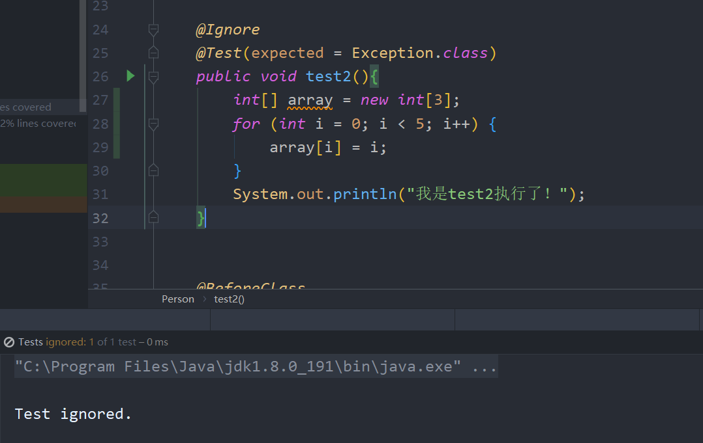

JUnit4 在学习fastjson之前，感觉有必要先学习一下Junit4的注解，自从SpringBoot之后注解大量的被使用，
JUnit出现的与因为main方法测试很不方便，摘自百度的部分：
1 2 用main方法测试的话就很不方便，想测试全部方法的话就得把测试代码全部写到里，或者你测一个重写一次。且更重要的是，这样会使测试代码与运行逻辑代码混在一起，不规范。 使用junit就方便多了,这是单元测试，你想测哪个方法就写一个对应的测试方法，然后用junit运行。每个方法之间是独立的，非常灵活。而且测试方法一般不会直接写在原类中，而是单独的测试类，这样测试代码就完全与逻辑代码分开了。
而在Junit4大量使用了从Java5中开始使用的注解，如下是JUnit4常用的注解：
before，test，after
Before：初始化方法，针对每个测试方法，都会执行一遍
Test: 代替main函数，可以让我们灵活的测试某部分代码,注意，测试的时候不要写一个Test类！！！！ ，否则因为会有限选择同包下的test类，导致报错,@Test方法所在类中,不能存在有参数构造函数,无参构造可以存在
After：在方法结束之后执行，每次都会执行！
例子：
1 2 3 4 5 6 7 8 9 10 11 12 13 14 15 16 17 18 19 20 21 22 package com.ys.pojo;import org.junit.After;import org.junit.Before;import org.junit.Test;public class Person @Before public void before () System.out.println("最先被执行！" ); } @Test public void test () System.out.println("wdnmd" ); } @After public void after () System.out.println("我之后才会被执行呢" ); } }
除此之外，Test注解还允许我们添加参数，检测是否抛出某部分异常：
例子：
1 2 3 4 5 6 7 8 @Test(expected = Exception.class) public void test2 () int [] array = new int [3 ]; for (int i = 0 ; i < 5 ; i++) { array[i] = i; } } }
当代码出现异常的时候，则不会抛出异常，相反的，如果这段代码正常抛出，就会抛出异常了。
beforeclass，afterclass
BeforeClass: 在所有类被执行之前执行，只会执行一次，同时必须为static静态方法（因为他们就相当于此）
AfterClass: 在所有类被执行之后执行
1 2 3 4 5 6 7 8 9 10 11 12 13 14 15 16 17 18 19 20 21 22 23 24 25 26 27 28 29 30 31 32 33 34 35 36 37 38 39 40 41 package com.ys.pojo;import org.junit.*;import java.lang.reflect.Array;public class Person @Before public void before () System.out.println("我就相当于构造器！" ); } @Test public void test1 () System.out.println("我是test1，我被执行了" ); } @After public void after () System.out.println("我之后才会被执行" ); } @Test(expected = Exception.class) public void test2 () int [] array = new int [3 ]; for (int i = 0 ; i < 5 ; i++) { array[i] = i; } System.out.println("我是test2执行了！" ); } @BeforeClass public static void beforeClass () System.out.println("我在所有的前面被执行，并且我只会执行一次！" ); } @AfterClass public static void afterClass () System.out.println("我在最终所有结束之后才会被执行" ); } }
Ignore
Ignore可以让我们暂时的禁用特定的类，被注解之后的类将不再被执行
Ignore经过我测试，只有当他放在测试类前才可以生效。
例子：

而如果我们放在其他类前面：
我们可以发现依然被执行了！
Runwith
Runwith放在测试类之前，用于确定这个类该如何运行，我们也可以不标注，将会使用默认的运行容器
可以看这篇文章来理解：
1 https://my.oschina.net/itblog/blog/1550753?tdsourcetag=s_pcqq_aiomsg
Fastjson
将JAVA对象转换成json格式 1 2 3 4 5 6 7 8 9 10 11 12 13 14 15 16 17 18 19 20 21 22 23 24 25 26 27 package com.ys.pojo;import com.alibaba.fastjson.JSON;import org.junit.Before;import org.junit.Test;import java.util.ArrayList;import java.util.Date;import java.util.List;public class Fortest private List<JavaToJson> listOfJava = new ArrayList<JavaToJson>(); @Before public void setUp () listOfJava.add(new JavaToJson(18 ,"wndmd" ,new Date())); listOfJava.add(new JavaToJson(20 ,"Json!" ,new Date())); } @Test public void test () String list = JSON.toJSONString(listOfJava); System.out.println(list); } }
注意，上述代码需要另外起一个类，test不允许在有参构造的类中出现
得到输出结果：
1 2 3 4 5 6 7 8 9 10 11 [ {"Age" :18 , "DATE OF BIRTH" :1604309562809 , "FULL NAME" :"wndmd" }, { "Age" :20 , "DATE OF BIRTH" :1604309562809 , "FULL NAME" :"Json!" } ]
我们还可以格式化自定义输出，控制字段的排序。
我们更新bean并添加如下字段：
1 2 3 4 5 6 7 8 9 public class JavaToJson @JSONField(name = "Age",serialize = false) private int age; @JSONField(name = "FULL NAME",ordinal = 2) private String fullName; @JSONField(name = "DATE OF BIRTH",format = "dd/MM/yyyy",ordinal = 1) private Date date;
注意在这里我们添加serialize = false，这里是默认我们添加序列化，如果我们设置为false，该字段将不会被显示。
而ordinal，则是用于规定格式化的顺序，需要注意的是，如果你想控制，最好就全部都使用该属性修饰，或者你自己干脆写的时候就从上向下写，不然的话，默认从上向下执行，只会再按照ordinal限定的顺序排列
上述代码输出：
1 2 3 4 5 6 7 8 9 10 [ { "DATE OF BIRTH" :"02/11/2020" , "FULL NAME" :"wndmd" }, { "DATE OF BIRTH" :"02/11/2020" , "FULL NAME" :"Json!" } ]
如果将serialize的false去掉之后，他还是第一个被执行：
1 2 3 4 5 6 7 8 9 10 11 12 [ { "Age" :18 , "DATE OF BIRTH" :"02/11/2020" , "FULL NAME" :"wndmd" }, { "Age" :20 , "DATE OF BIRTH" :"02/11/2020" , "FULL NAME" :"Json!" } ]
作用对象 @JSONField 的作用对象:
需要注意如下两点：
注意： FastJson 在进行操作时，是根据 getter 和 setter 的方法进行的，并不是依据 Field 进行。
注意： 若属性是私有的，必须有 set 方法。否则无法反序列化。
跟进JSONField查看源码，可以知道我们允许指定很多东西=。=：
1 2 3 4 5 6 7 8 9 10 11 12 13 14 15 16 17 18 19 20 21 22 23 24 25 26 27 28 29 public @interface JSONField { int ordinal () default 0 String name () default "" ; String format () default "" ; boolean serialize () default true boolean deserialize () default true SerializerFeature[] serialzeFeatures() default {}; Feature[] parseFeatures() default {}; String label () default "" ; boolean jsonDirect () default false Class<?> serializeUsing() default Void.class; Class<?> deserializeUsing() default Void.class; String[] alternateNames() default {}; boolean unwrapped () default false String defaultValue () default "" ; }
配置方式 FieldInfo 可以配置在 getter/setter 方法或者字段上。例如：
配置在 getter/setter 上 1 2 3 4 5 6 7 8 public class A private int id; @JSONField(name="ID") public int getId () return id;} @JSONField(name="ID") public void setId (int value) this .id = id;} }
配置在 field 上 1 2 3 4 5 6 7 public class A @JSONField(name="ID") private int id; public int getId () return id;} public void setId (int value) this .id = id;} }
创建 JSON 对象 创建 JSON 对象非常简单，只需使用 JSONObject（fastJson提供的json对象） 和 JSONArray（fastJson提供json数组对象） 对象即可。
虽然JSONArryay也可以创建一个JSON对象，但我觉得书写方式不够美观，其中如下：
1 2 3 4 5 6 7 8 9 10 11 12 @Test public void whenGenerateJson_thanGenerationCorrect () throws ParseException JSONArray jsonArray = new JSONArray(); for (int i = 0 ; i < 2 ; i++) { JSONObject jsonObject = new JSONObject(); jsonObject.put("AGE" , 10 ); jsonObject.put("FULL NAME" , "Doe " + i); jsonObject.put("DATE OF BIRTH" , "2016/12/12 12:12:12" ); jsonArray.add(jsonObject); } String jsonOutput = jsonArray.toJSONString(); }
JSON 字符串转换为 Java 对象 fastjson允许我们可以将前端传来的数据转换变成JSON数据，同样的也允许我们把后端数据转换为JSON字符串丢给前端。
1 2 3 4 5 6 7 8 9 10 11 12 @Test public void jsonToJava () JavaToJson miaomiaomiao = new JavaToJson(21 , "miaomiaomiao" , new Date()); String jsonObject = JSON.toJSONString(miaomiaomiao); JavaToJson newJavaObject = JSON.parseObject(jsonObject,JavaToJson.class); System.out.println(newJavaObject.getAge()); System.out.println(newJavaObject.getFullName()); }
使用ContextValuFilter配置JSON转换 在有些场景中，对Value做过滤，需要获得所述JavaBean的信息，而我们可能想要过滤某些信息，便可以使用该方法进行操作了。
1 2 3 4 5 6 7 8 9 10 11 12 13 14 15 16 17 18 19 20 21 22 23 24 @Before public void before () listOfJava.add(new JavaToJson(31 ,"wdnmd" ,new Date())); listOfJava.add(new JavaToJson(33 ,"wd" ,new Date())); } @Test public void givenContextFilter_whenJavaObject_thanJsonCorrect () ContextValueFilter valueFilter = new ContextValueFilter () { public Object process ( BeanContext context, Object object, String name, Object value) if (name.equals("DATE OF BIRTH" )) { return "NOT TO DISCLOSE" ; } if (value.equals("wdnmd" )) { return ((String) value).toUpperCase(); } else { return null ; } } }; String jsonOutput = JSON.toJSONString(listOfJava, valueFilter); System.out.println(jsonOutput); }
经过上述代码的操作，我们的时间将会修改为NOT TO DISCLOSE，并且数据中不包含wdnmd的将会被过滤,具体输出如下：
1 2 3 4 5 6 7 8 9 10 11 12 13 14 [ { "DATE OF BIRTH" :"NOT TO DISCLOSE" }, { "DATE OF BIRTH" :"NOT TO DISCLOSE" }, { "DATE OF BIRTH" :"NOT TO DISCLOSE" ,"FULL NAME" :"wdnmd" }, { "DATE OF BIRTH" :"NOT TO DISCLOSE" } ]